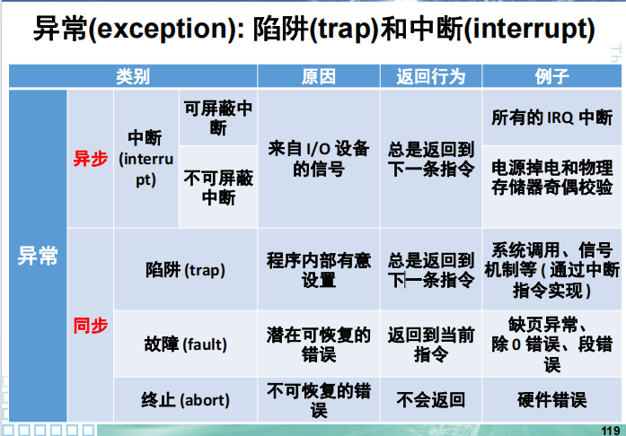
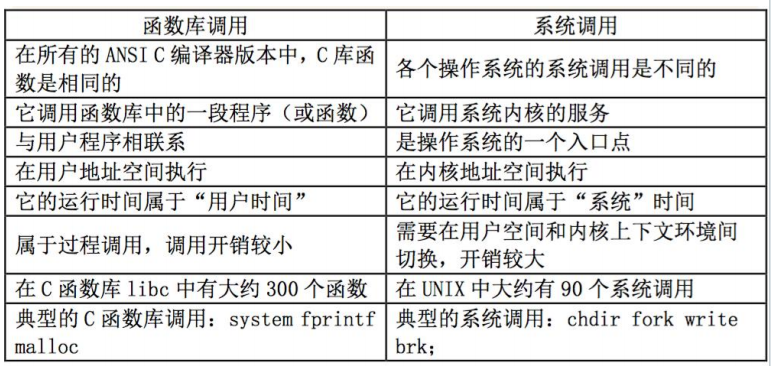
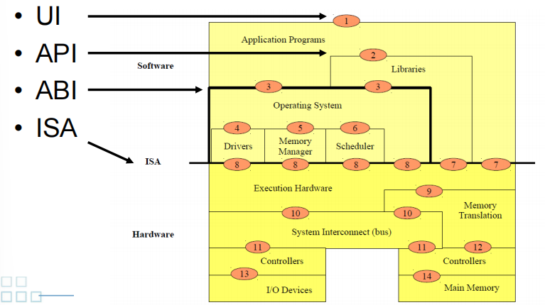
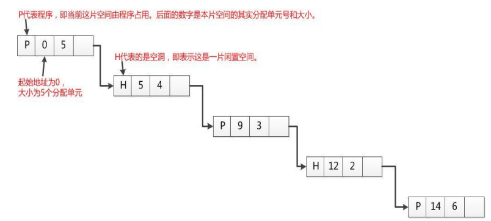
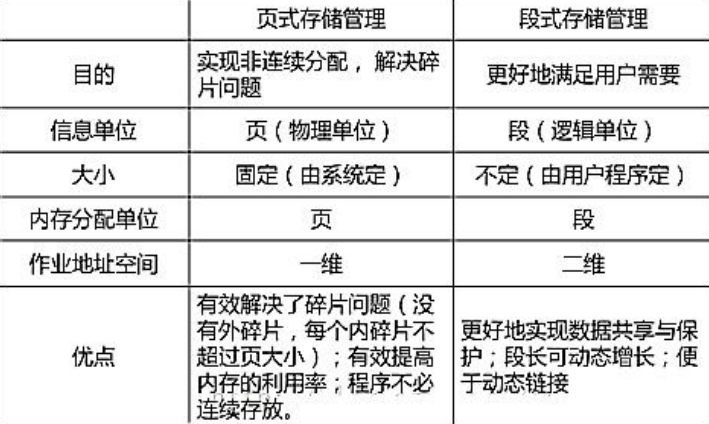

序
框架来源：各老师的复习PPT。内容主要来源于shl老师的PPT。需要注意的是，应试应看遍所有老师的PPT的细节（比如I/O四个软件层的具体举例似乎只有wty老师写了）。
事实上，在后续做题和复习中，笔者又添加了很多内容，暂时没有空整理。在这立一个🚩。
考纲
了解操作系统各个组成部分的基本结构和原理
掌握在进程管理、存储管理、设备管理、磁盘管理及文件管理等涉及的概念和相关算法
引论
冯·诺伊曼体系结构
存储程序式，集中顺序过程控制
组成
- 中央处理单元
- 存储器
- 输入输出
架构局限
§ CPU与内存的交互引起的内存墙问题
§ 数据与指令不区分，指令等数据或数据等指令
§ 串行顺序处理，缺乏数据并行能力
操作系统的发展变化
批处理系统
定义
加载在计算机上的一个系统软件，在它的控制下，计算机能够自动地、成批地处理一个或多个用户的作业（这作业包括程序、数据和命令）。
分类
联机批处理系统：即作业的输入/输出由CPU来处理。出现“忙等”。
脱机批处理系统：为克服与缓解高速主机与慢速外设的矛盾，提高CPU的利用率，又引入了脱机批处理系统，即输入/输出脱离主机控制
多道程序系统
不仅使CPU得到充分利用，同时也改善I/O设备和内存的利用率，从而提高了整个系统的资源利用率和系统吞吐量（即单位时间内处理作业（程序）的个数），最终提高了整个系统的效率。
标志着操作系统渐趋成熟的阶段，先后出现了作业调度管理、处理机管理、存储器管理、外部设备管理、文件系统管理等功能。
特点：
- 多道
- 宏观上并行
- 微观上串行
优点：
- 系统吞吐量大
- 资源利用率高
缺点：
- 平均周转时间长
- 不能提供交互能力
分时系统
定义
多个用户分享使用同一台计算机。多个程序分时共享硬件和软件资源。
特点
- 多路性
- 独立性：用户相互不打扰
- 及时性：响应时间
- 交互性：人机对话
实时、网络、分布式
实时
• 及时响应
• 高可靠性和安全性
• 系统的整体性强
• 交互会话活动较弱
• 专用系统
• 种类：实时信息处理、实时控制
网络
联网功能，资源的远程访问
分布式
定义：在整个系统中有一个全局的操作系统
多台机器统一管理形成单一系统，相比网络，对用户和应用高度透明。具有多级合作和健壮性。
- 数据透明
- 执行透明
- 保护透明
操作系统的主要功能
• 提供解决各种冲突（资源竞争引起）的策略
– 处理机调度、进程调度、内存分配、设备分配等
• 协调并发活动的关系（提供流程控制和避免运行
结果不确定性）
– 进程之间的通信，同步与互斥
• 保证数据的一致性
– 读写数据时，数据结构中的内容是否真实地记录了数
据的实际情况
– 在分布式处理时的共享数据的不同副本是否一致
• 实现数据的存取控制
– 共享程度、隐私程度、安全程度的控制
进程管理（处理机分配）
核心任务：如何分配CPU时间
- 进程管理
- 进程的调度：创建、挂起、激活
- 进程间的通信：同步、互斥、死锁
- 线程管理
主要功能
- 公平分配
- 保证非阻塞
- 按优先级分配
存储管理
核心任务
管理缓存、主存、磁盘等所形成的多级存储架构，为多道程序的并发提供良好的环境
主要功能
- 内存分配和存储无关性
- 内存保护：互不干扰
- 内存扩充：虚拟存储器
设备管理（包括磁盘管理）
核心任务
管理输入/输出设备，屏蔽差异性，提供并发访问
主要功能
设备无关性：逻辑设备->物理设备
设备分配：独享、共享和虚拟
设备的传输控制：中断、通道
文件系统
核心任务
将磁盘变成一个很容易使用的存储媒介提供给用户使用
主要功能
- 文件存储空间的管理
- 目录管理
- 文件读写管理
- 文件保护
- 向用户提供接口
接口管理
程序接口
系统调用
用户接口
联机用户接口
脱机用户接口
图形用户接口
现代操作系统的基本特征
并发执行
资源共享
虚拟化管理：CPU, 存储器
异步性不确定性事件的处理）
操作系统的工作模式
内核态/管态
运行操作系统程序
用户态/目态
运行用户程序
切换过程？
内核与应用使用不同的页表。用户态无法直接寻址内核空间的数据。因此需要切换。
用户态—>内核态：中断/异常/陷入机制
内核态—>用户态：设置程序状态字PSW（MIPS的CP0寄存器）
几个术语
特权指令/保护指令
只能由操作系统使用、用户程序不能使用的指令
异常：中断、陷入（作用、区别？）（系统调用过程）

系统调用的概念
系统调用提供用户程序与操作系统之间的接口，唯一接口使CPU状态从用户态陷入内核态
系统调用和函数调用的区别

用户态程序如何访问系统功能，描述过程，如何切换入内核态执行
- CPU执行
int 0x2e，CPU运行状态切换为系统态 当前进程使用的堆栈，从用户态切换到系统态。堆栈原先的内容（用户态），以及用户空间的堆栈指针，被压入系统空间堆栈。
从中断向量表中(
InterruptDescriptor Table)以0x2e为中断向量，开始执行系统空间中的程序。程序执行后，通过
iret(中断返回)指令实现上述过程的逆过程
当CPU执行到特殊的陷入指令时
§ 中断/异常机制：硬件保护现场；通过查中断向量表把控制权转给系统调用总入口程序
§ 系统调用总入口程序：保存现场；将参数保存在内核堆栈里；通过查系统调用表把控制权转给相应的系统调用处理例程或内核函数
§ 执行系统调用例程
§ 恢复现场，返回用户程序
操作系统结构
计算机体系结构中的接口
- UI
- API: API 定义了源代码和库之间的接口，因此同样的代码可以在支持这个 API 的任何系统中编译 。
- ABI: 应用程序二进制接口, ABI 允许编译好的目标代码在使用兼容 ABI 的系统中无需改动就能运行。(2024期中三3)
- ISA: ISA充当软件和硬件之间的接口，为ISA编写的软件可以在同一ISA的不同实现上运行。这使得可以轻松实现不同代计算机之间的二进制兼容性以及计算机家族的发展。

什么是操作系统内核？如何进入？
微内核、整体内核（宏内核）
辨析
宏内核：整个系统分为内核与应用两层
• 内核：运行在特权级，集中控制所有计算资源
• 应用：运行在非特权级，受内核管理，使用内核服务
微内核：内核中只包括中断处理、进程通信（IPC）、基本调度等。文件系统、网络功能、内存管理、设备管理等作为服务在微内核上运行。设计原则：最小化内核功能
• 将操作系统功能移到用户态，称为服务（Server）
• 在用户模块之间，使用消息传递机制通信
优缺点
对宏内核而言
- 优点：宏内核拥有丰富的沉淀和积累
- 拥有巨大的统一的社区和生态
- 针对不同场景优化了30年
- 缺点：
- 安全性与可靠性问题：模块之间没有很强的隔离机制
- 实时性支持：系统太复杂导致无法做最坏情况时延分析
- 系统过于庞大而阻碍了创新：Linux代码行数已经过2千万
对微内核而言
- 优点：内核易于实现、可移植性好、配置灵活、适应分布式环境（本地内核与远程内核对服务提供同样支持）、安全性高
- 缺点：速度较慢。（扩大内核减少切换；减少内核提高其他优点）
完整版：
§ 优点
• 易于扩展：直接添加一个用户进程即可为操作系统增加服务
• 易于移植：大部分模块与底层硬件无关
• 更加可靠：在内核模式运行的代码量大大减少
• 更加安全：即使存在漏洞，服务与服务之间存在进程粒度隔离
• 更加健壮：单个模块出现问题不会影响到系统整体
§ 缺点
• 性能较差：内核中的模块交互由函数调用变成了进程间通信
• 生态欠缺：尚未形成像Linux一样具有广泛开发者的社区
• 重用问题：重用宏内核操作系统提供兼容性，带来新问题
操作系统引导
OS分阶段引导过程
CPU通电启动或者Reset时，CPU从一个预定义的内存位置开始执行bootloader
bootloader程序一般存储于ROM只读存储器，因为RAM在系统启动时处于未知状态，而ROM它不需要初始化，也不容易被计算机病毒感染
Bootloader需要正确地找到内核并加载执行，大部分分为stage1和stage2两个部分
§ Stage 1
• 依赖于CPU体系结构的代码（如设备初始化代码等）通常都放在stage1且可以用汇编语言来实现
• 需要初始化硬件设备，包括 watchdog timer、中断、时钟、内存等
• bootloader 程序直接从非易失存储器上（比如 ROM 或 FLASH）加载，为加载 stage2 准备 RAM 空间
§ Stage 2
• 通常用C语言来实现，可实现复杂功能，更好的可读性和移植性
• 初始化这一阶段需要使用的硬件设备以及其他功能
• 将内核镜像从存储器读到 RAM 中，并为内核设置启动参数
• 将 CPU 指令寄存器的内容设置为内核入口函数的地址，即可将控制权从 bootloader 转交给操作系统内核
通过bootloader，我们可以初始化硬件设备、建立内存空间的映射表，从而建立适当的系统软硬件环境，为最终调用操作系统内核做好准备
各个阶段的职责
加载BIOS。BIOS中包含了CPU的相关信息、设备启动顺序信息、硬盘信息、内存信息、时钟信息、PnP特性等等。在此之后，计算机心里就有谱了，知道应该去读取哪个硬件设备了。
UEFI和BIOS的比较
二者显著的区别是：
§ EFI是用模块化，C语言风格的参数堆栈传递方式，动态链接的形式构建的系统，较BIOS而言更易于实现，容错和纠错特性更强，缩短了系统研发的时间。
§ 它运行于32位或64位模式，乃至未来增强的处理器模式下，突破传统BIOS的16位代码的寻址能力，达到处理器的最大寻址。
读取MBR。硬盘上第0磁头第0磁道第1个扇区被称为MBR，即主引导记录，它的大小是512字节，存放了预启动信息、分区表信息。
- 由于MBR的限制 只能有4个主分区，系统必须装在主分区上面。
- 硬盘分区有三种，主磁盘分区、扩展磁盘分区、逻辑分区。
- 一个硬盘主分区至少有1个，最多4个，扩展分区可以没有，最多1个。且主分区+扩展分区总共不能超过4个。逻辑分区可以有若干个。
- 主分区只能有一个是激活的（active），其余为inactive。
MBR组成：
§ MBR主引导记录包含两部分的内容，前446字节为启动代码及数据
§ 之后则是分区表（DPT, Disk Partition Table），分区表由四个分区项组成，每个分区项数据为16字节，记录了启动时需要的分区参数。这64个字节分布在MBR的第447-510字节
§ 后面紧接着两个字节AA和55被称为幻数, BOIS读取MBR的时候总是检查最后是不是有这两个幻数，如果没有就被认为是一个没有被分区的硬盘。
Boot Loader
§ LILO 没有交互式命令界面，而 GRUB 拥有。
§ LILO 不支持网络引导，而 GRUB 支持。
§ LILO 将关于可以引导的操作系统位置的信息物理上存储在 MBR 中。如果修改了 LILO 配置文件，必须将 LILO 第一阶段引导加载程序重写到 MBR。错误配置的 MBR 可能会让系统无法引导。
§ 使用 GRUB，如果配置文件配置错误，则只是默认转到 GRUB 命令行界面。
各个阶段引导程序的存储与装载过程
程序的链接与装载：编译-链接-装载-执行
程序一般由3个段组成，除此之外还需构建一个栈，一个堆：
- bss段：未初始化的全局变量、static声明的变量，静态内存分配。不在可执行文件中，由系统初始化。
- data段：已初始化的全局变量、static声明的变量，静态内存分配。在可执行文件中。
- text段：用来存放程序执行代码的一块内存区域，可能包含一些只读的常数变量，例如字符串常量。在可执行文件中。
- 栈（stack）：存放、交换临时数据的内存区。存放程序局部变量（但不包括static声明的变量，static意味着在数据段中存放变量）
- 堆（heap）：动态分配的内存段，当进程调用malloc等函数，新分配的内存就被动态添加到堆上。
程序的装载细节
一个segment在文件中的大小是小于等于其在内存中的大小。如果在文件中的大小小于在内存应有的大小，载入时会补零直至应有的大小。
简述Linux内核在x86平台上的加载过程
存储管理
存储管理的功能
内存的分配与回收
存储保护
地址转换
静态重定位
• 当用户程序加载到内存时，一次性实现逻辑地址到物理地址的转换
• 一般可以由软件完成
动态重定位
• 在进程执行过程中进行地址变换，即逐条指令执行时完成地址转换
• 需要硬件部件支持
存储共享
扩充内存容量
分区存储管理
固定分区
基本思想
采用的数据结构：分区表记录分区的大小和使用情况
优缺点
§ 优点
• 易于实现，开销小
§ 缺点
• 内部碎片，造成空间浪费
碎片
内部碎片
分配大小大于实际使用
外部碎片
空闲的但不连续，无法被使用，外部碎片才是造成内存系统性能下降的主要原因。
如何消除内部碎片和外部碎片
伙伴系统
介于固定分区与可变分区之间，其大小均为$2^{k}$。
紧凑技术
通过移动作业从把多个分散的小分区拼接成一个大分区的方法称为紧凑（拼接或紧缩） 。
实现支撑：动态重定位。
段/页式内存管理
• 分区总数固定，限制了并发执行的程序数目
可变分区
基本思想
• 根据作业的实际需要，动态地为之分配内存空间
• 划分的时间、大小、位置都是动态的
优缺点
§ 优点
• 没有内碎片
• 克服固定分区内存资源的浪费问题，有利于多道程序设计，提高内存资源利用率
动态分配数据结构
位图表示法（分区表）：给每个分配单元赋予一个字位，用来记录该分配单元是否闲置。例如，字位取值为0表示单元闲置，取值为1则表示已被占用
• 空间成本固定：不依赖于内存中的程序数量
• 时间成本低：操作简单，直接修改其位图值即可
• 没有容错能力：如果一个分配单元为1，不能肯定应该为1还是因错误变成1
链表表示法（分区链表）：将分配单元按照是否闲置链接起来，这种方法称为链表表示法。如上图所示的的位图所表示的内存分配状态
• 空间成本：取决于程序的数量
• 时间成本：链表扫描通常速度较慢，还要进行链表项的插入、删除和修改
• 有一定容错能力：因为链表有被占空间和闲置空间的表项，可以相互验证

主要算法
BestFit
往往使剩下的空闲区非常小，从而在存储器中留下许多难以利用的小空闲区
WorstFit
大作业存储空间的申请往往会得不到满足
FirstFit
- 优点：
• 分配和释放的时间性能较好
• 较大的空闲分区保留在内存的高端
- 缺点：
• 随着低端内存被不断分配，会产生很多小分区，开销会增大
NextFit
使存储空间的利用更加均衡，不致使小的空闲区集中在存储区的一端，但这会导致缺乏大的空闲分区
覆盖与交换
覆盖与交换技术是在多道程序环境下用来扩充内存的两种方法，可以解决在小的内存空间运行大作业的问题。
覆盖
定义：把一个程序划分为一系列功能相对独立的程序段，让执行时不要求同时装入内存的程序段组成一组（称为覆盖段），共享主存的同一个区域。
原理：程序段先保存在磁盘上，当有关程序段的前一部分执行结束，把后续程序段调入内存，覆盖前面的程序段。
要求：作业各模块之间有明确的调用结构，程序员要向系统指明覆盖结构，然后由操作系统完成自动覆盖。
缺点：对用户不透明，增加了用户负担。
交换
定义：把暂时不用的某个（或某些）程序及其数据的部分或全部从主存移到辅存中去，以便腾出必要的存储空间；接着把指定程序或数据从辅存读到相应的主存中，并将控制转给它，让其在系统中运行。
优点：增加并发运行的程序数目，并且给用户提供适当的响应时间；编写程序时不影响程序结构。
缺点：对换入和换出的控制增加处理机开销；程序整个地址空间都进行传送，没有考虑执行过程中地址访问的统计特性。
选择原则：等待I/O的进程。
交换时机的确定：只要不用就换出；只在内存空间不够或有不够的危险时换出。
区别
§ 覆盖可减少一个程序运行所需的空间。交换可让整个程序暂存于外存中，让出内存空间
§ 覆盖是由程序员实现的，操作系统根据程序员提供的覆盖结构来完成程序段之间的覆盖。交换技术不要求程序员给出程序段之间的覆盖结构
§ 覆盖技术主要对同一个作业或程序进行。交换主要在作业或程序间之间进行
页式存储管理
主要目的：提高内存空间利用率。页面与源程序不存在逻辑关系。
页面、页框
- 页/页面：在分页存储管理系统中，把每个作业的地址空间分成一些大小相等的片
- 存储块/页框：把主存的存储空间分成与页面相同大小的片
地址转换
CPU地址划分为：虚拟页号+页内偏移。
如果逻辑地址空间为$2^m$，且页大小为$2^n$单元，那么逻辑地址的高m-n位表示页号（页表的索引），而低n位表示页偏移。
MMU
页表
包含多个页表项，存储虚拟页到物理页的映射
多级页表
杂凑页表
反置页表
不是依据进程的逻辑页号来组织，而是依据该进程在内存中的物理页面号来组织（即：按物理页面号排列），其表项的内容是逻辑页号 P 及隶属进程标志符 pid
大小只与物理内存的大小相关，优点：页表占用的内存空间小
快表TLB
一种特殊的高速缓冲存储器（Cache） ，内容是页表中的一部分或全部内容。
CPU 产生逻辑地址的页号，首先在快表中寻找，若命中就找出其对应的物理块；若未命中，再到页表中找其对应的物理块，并将之复制到快表。若快表中内容满，则按某种算法淘汰某些页
页面的大小
最常用的页面大小为$4KB$。
若页面较小
• 减少页内碎片和总的内存碎片，有利于提高内存利用率。
• 每个进程页面数增多，使页表长度增加，占用内存较大。
• 页面换进换出速度将降低。
若页面较大
• 每个进程页面数减少，页表长度减少，占用内存较小。
• 页面换进换出速度将提高。
• 增加页内碎片，不利于提高内存利用率
自映射
页目录表基址 $PD_{base}$:
$PD{base}=PT{base}|(PT_{base})>>10$
自映射目录表项$PDE_{self-mapping}$:
$PDE{self-mapping}=PT{base}|(PT{base})>>10|(PT{base})>>20$
段式存储管理
基本思想
主要是满足用户（程序员）编程和使用要求。程序更多采用分段结构，源程序经编译或汇编后，仍按照自身逻辑关系分为若干段。段之间的地址不一定连续，而段内地址一定连续。
- 方便编程
- 信息共享
- 信息保护
- 动态增长
- 动态链接
地址变换
二维地址结构（段号：段内地址）。
这种地址结构需要编译程序的支持，但对程序员而言是透明的。
分页与分段的比较（辨析异同）

优点
分段系统易于实现段的共享，对段的保护也十分简单
缺点
- 处理机要为地址变换花费时间；要为表格提供附加的存储空间
- 为满足分段的动态增长和减少外零头，要采用拼接手段。
- 在辅存中管理不定长度的分段困难较多
- 分段的最大尺寸受到主存可用空间的限制
段页式内存管理
基本思想
用分段方法来分配和管理虚拟存储器，而用分页方法来分配和管理实存储器。
实现原理
段页式存储管理是分段和分页原理的结合，即先将用户程序分成若干个段（段式） ，并为每一个段赋一个段名，再把每个段分成若干个页（页式） 。
其地址结构由段号、段内页号、及页内位移三部分所组成。
- 设段表和页表，均存放于内存中，读一字节的指令或数据须访问内存三次。每个进程一张段表，每个段一张页表。
虚拟存储：原理与算法
自动实现部分装入和部分对装。
内存访问的局部性原理
指程序在执行过程中的一个较短时期，所执行的指令地址和指令的操作数地址，分别局限于一定区域。还可以表现为：
• 时间局部性，即一条指令的一次执行和下次执行，一个数据的一次访问和下次访问都集中在一个较短时期内；
• 空间局部性，即当前指令和邻近的几条指令，当前访问的数据和邻近的数据都集中在一个较小区域内。
页面置换策略
最优算法：OPT
页错误率最低，无法被实现。
淘汰页应是以后不再访问的页或距现在最长时间后再访问的页。
先进先出：FIFO
淘汰页：最先调入内存的页。
性能较差，有Belady现象。
Belady
在使用FIFO算法作为缺页置换算法时，分配的缺页增多，但缺页率反而提高。
在使用FIFO算法作为缓存算法时，同样也会遇到类似情况：增加缓存容量，但缓存命中率也会下降。
第二次机会算法SCR
改进的FIFO。其思想：“如果被淘汰的数据之前被访问过，则给其第二次机会”。
时钟算法：Clock
改进的FIFO，也称最近未使用算法（NRU），通过一个环形队列，避免将数据在FIFO队列中移动。
FIFO类算法对比
| 对比点 | 对比 |
|---|---|
| 命中率 | Clock = SCR > FIFO |
| 复杂度 | SCR > Clock > FIFO |
| 代价 | SCR > Clock > FIFO |
最近最少使用：LRU
思想：“如果数据最近被访问过，那么将来被访问的几率也更高”。
局部性原理的合理近似，性能接近最佳算法。但由于需要记录页面使用时间的先后关系，硬件开销太大。
老化算法：AGING
LRU的简化，但性能接近LRU。为每个页码设置一个移位寄存器，并设置一位访问位R，每隔一段时间，所有寄存器右移1位，并将R值从左移入。
最不频繁使用：LFU
工作集策略
进程的工作集：当前正在使用的页面的集合；
进程的驻留集：虚拟存储系统中，每个进程驻留在内存的页面集合，或进程分到的物理页框集合。
引入工作集的目的：依据进程在过去的一段时间内访问的页面来调整驻留集大小。
工作集策略：NT根据内存负荷和进程缺页情况自动调整工作集。进程创建时，指定一个最小工作集，当内核负荷不太大时，允许进程拥有尽可能多的页面；系统通过自动调整保证内存中有一定的空闲页面存在。
缺页中断率
其他内容
内存抖动
定义
随着驻留内存的进程数目增加，或者说进程并发水平的上升，处理器利用率先是上升，然后下降。这里下降的原因通常称为虚拟存储器发生“抖动”，即每个进程的驻留集不断减小，当驻留集小于工作集后，缺页率急剧上升频繁调页使得调页开销增大。
解决办法
- 局部置换策略（微观层面）：正在抖动的进程不能从另外的进程夺取内存块。并未消除抖动的发生。
- 引入工作集算法（微观）
- 预留部分页面（微观或宏观）
- 挂起若干进程：消除抖动现象（宏观）
写时复制技术
内存映射文件
存储保护

...
...
This is copyright.